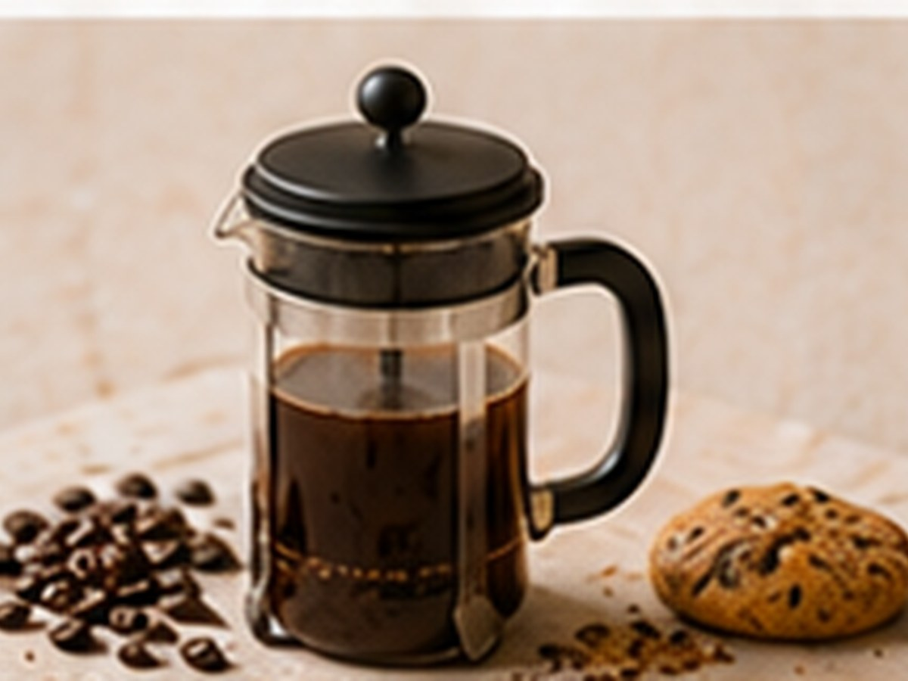

✨ KI-generiertes Bild Filterkaffee-KlassikerFilterkaffee-Klassiker
French Press Kraftvoll
Vollmundig, unkompliziert.
⏱5 Min.
📶Einfach
☕2 Portionen
🫘Zutaten
- Kaffee, grob gemahlen20 g
- Wasser280 ml
📋Zubereitung
- 1Kaffee in die Kanne geben, mit heißem Wasser übergießen.
- 2Deckel aufsetzen, 4 Minuten ziehen lassen.
- 3Langsam herunterdrücken und servieren.
💡
Kaffee für dieses Rezept entdeckenLeNoKo Shop
→
Kaffee-Tipp
unseren Peru Signature bringt den vollen Körper, der zur French Press passt.